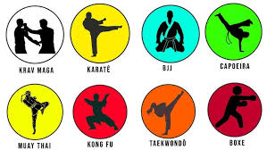

Bem-vindo ao mundo das Artes Marciais
Explore diferentes estilos e descubra a filosofia por trás de cada técnica.
Sobre as Artes Marciais
As artes marciais são práticas milenares que envolvem combate, defesa pessoal e desenvolvimento físico e mental. Elas possuem raízes culturais em diferentes partes do mundo e combinam técnicas de ataque, defesa e autocontrole.
Estilos de Artes Marciais
Karate
Originário do Japão, o Karate combina golpes rápidos e precisos com disciplina mental. Seu foco está em socos, chutes e defesas rápidas. É amplamente praticado no mundo todo como esporte e autodefesa.
.jpeg)
Jiu-Jitsu
Arte marcial brasileira, derivada do Judô japonês. Enfatiza técnicas de chão, como alavancas, chaves de braço e estrangulamentos, permitindo que o praticante derrote adversários mais fortes.
.jpeg)
Taekwondo
Desenvolvido na Coreia, o Taekwondo destaca-se por seus chutes acrobáticos e velozes. É uma modalidade olímpica que exige força, flexibilidade e agilidade.
.jpeg)
Kung Fu
Uma das artes marciais mais antigas, originária da China. Seus movimentos são inspirados na natureza e na filosofia budista, com estilos que imitam animais como tigres e serpentes.
.jpeg)
Muay Thai
Conhecida como a "arte das oito armas", o Muay Thai é uma luta tailandesa que utiliza punhos, cotovelos, joelhos e canelas. É um esporte de combate e também um sistema eficaz de autodefesa.
.jpeg)
Judô
Criado no Japão, o Judô enfatiza projeções e controle do adversário no solo. É uma arte marcial olímpica que promove disciplina, respeito e autocontrole.
.jpeg)
Boxe
Boxe ou pugilismo é um esporte de combate e arte marcial, no qual os lutadores usam apenas os punhos, tanto para a defesa, quanto para o ataque
.jpeg)
Krav maga
O krav maga usa movimentos curtos e objetivos, que podem ser executados por qualquer pessoa em defesa própria, tendo o próprio corpo como arma.
.jpeg)
Capoeira
Utiliza principalmente de movimentos feitos junto ao chão ou de cabeça para baixo. Os golpes mais comuns são: chutes, rasteiras, cabeçadas, joelhadas, cotoveladas, acrobacias em solo ou aéreas.
.jpeg)
M.M.A
O M.M.A é a sigla para Mixed Martial Arts, ou em português, artes marciais mistas. M.M.A são artes marciais que incluem golpes de luta em pé e técnicas de luta no chão.